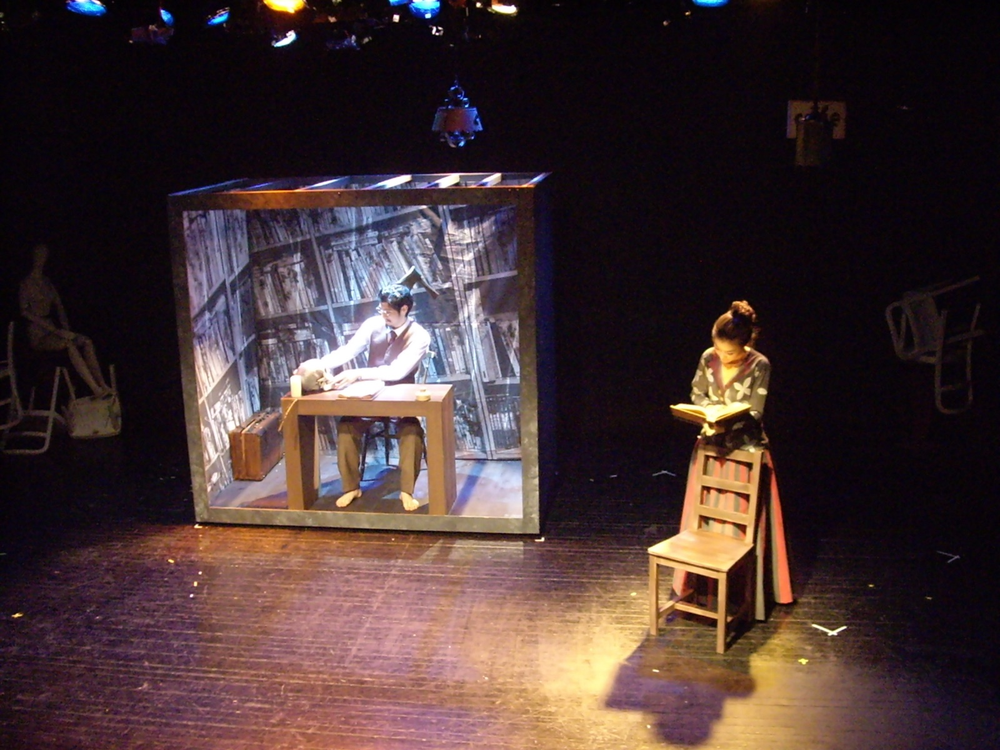
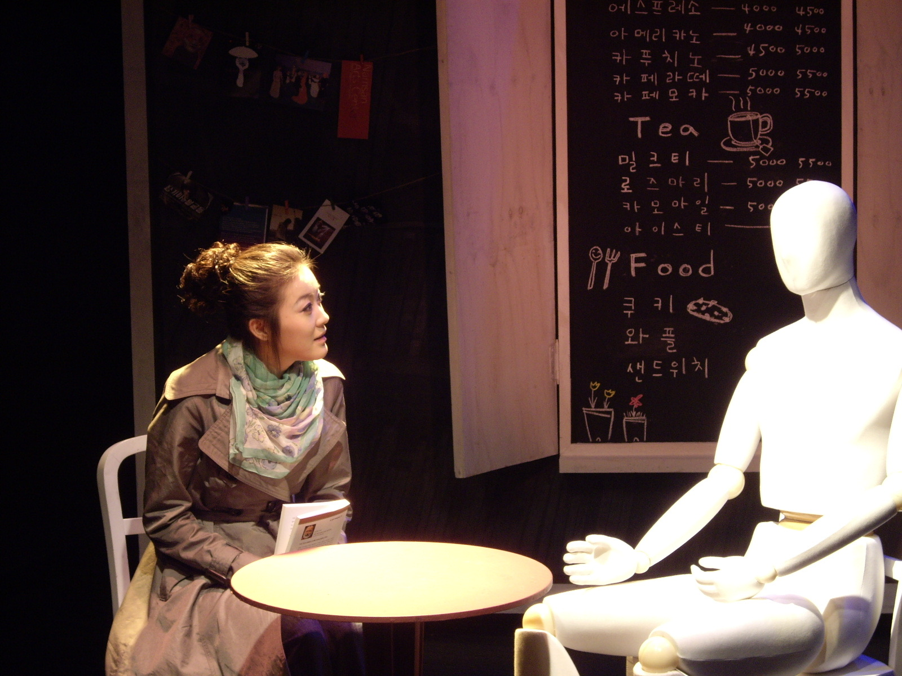
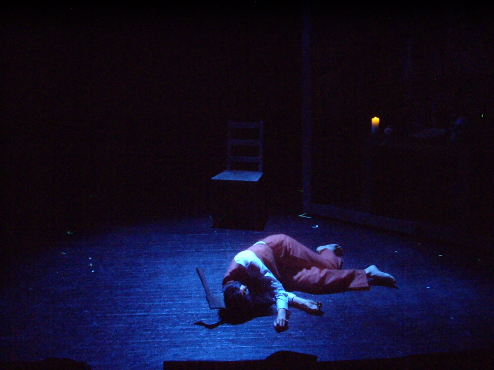
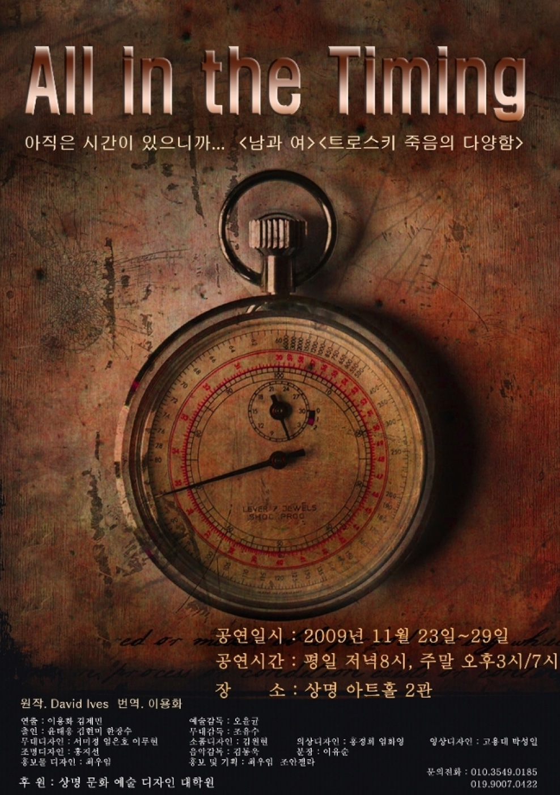

Performance — 2009
Variations on the
Death of Trotsky트로츠키 죽음의 다양함 · All in the Timing
1940년 8월 20일, 트로츠키는 암살당했다. 그러나 그 자신은 그것을 인정하지 못한 채 — 아직 살아 있다고 생각한다.
On 20 August 1940, Trotsky was assassinated. But he cannot accept it — he believes he is still alive.
데이비드 아이브스의 단막극을 바탕으로, 무대는 트로츠키의 심리를 공간으로 옮깁니다. 비좁고 갑갑한 직육면체의 사각 틀로 에워싼 트로츠키의 서재는 뒤틀리고 왜곡되어 있습니다. 그곳은 꿈 안에 갇혀 현실로 나오지 못하는 트로츠키의 심리적 공간이자, 타인과의 경계를 그어 주는 물리적 공간입니다. 무대는 두 개의 시공간으로 나뉩니다 — 꿈속에 사는 트로츠키와 현실에 사는 타인들. 그들은 서로 다른 시공간에서 공존하지 못합니다.
트로츠키는 자신만의 상자 안에 존재하다가, 반복되는 죽음을 통해 점차 죽음을 받아들입니다. 그리고 꿈의 밖으로 나와 현실에 순응하는 순간 — 그는 평온해집니다.
After David Ives’s one-act, the stage translates Trotsky’s psyche into space: his study, boxed in a cramped rectangular frame, stands warped and distorted — the psychic room of a man trapped inside a dream, and the physical boundary that walls him from others. The stage divides into two space-times: Trotsky living in the dream, the others living in reality, unable to coexist. He persists inside his box until, through death repeated and repeated, he comes gradually to accept it — and in the moment he steps out of the dream and yields to reality, he is at peace.
- 작
- Written by
- David Ives
- 연출·영상
- Direction & video
- 김제민 Kim Jae Min
- 음악
- Music
- 김병제
- 조명
- Lighting
- 엄화영 · 홍정희
- 키워드
- Keywords
- David Ives · repeated death · warped box · dream vs reality
더블빌 — 〈남과 여〉
The double bill — ‘Man & Woman’
마네킹과 마주 앉은 대화
A conversation seated across from mannequins
공연은 아이브스 단막극집의 제목을 딴 더블빌 「All in the Timing」으로 구성되었습니다. 함께 오른 〈남과 여〉에서는 처음 만난 남녀가 작은 테이블을 사이에 두고 어색하게 어긋난 대화를 나누고, 각자의 옆에는 다른 성별의 마네킹이 앉아 있습니다. 마네킹은 사람처럼 의인화되어 말하지만 감정 없는 무미건조한 말들로 서로의 마음에 닿지 못합니다 — 가상공간의 가벼운 만남들, 진심의 부재, 어긋나는 의사소통. 극의 흐름은 유쾌한 해피엔딩이지만, 마네킹이라는 오브제가 사람과 사람 사이 공감의 무게를 되묻습니다.
The evening took its title from Ives’s collection — ‘All in the Timing.’ In the companion piece ‘Man & Woman,’ a couple on a first meeting trade awkward, mismatched talk across a small table, a mannequin of the opposite sex seated beside each. The mannequins converse like people, but in flat, feelingless words that never touch — the weightless encounters of virtual space, sincerity absent, communication astray. The piece runs bright and ends happy; the mannequin, as object, keeps asking what empathy between people weighs.
- 무대의 원리
- The stage principle
- 두 단막 모두 ‘함께 있으나 닿지 못하는’ 상태를 공간으로 번역한다 — 트로츠키의 뒤틀린 상자, 남과 여의 마네킹. 오브제와 상자가 곧 심리다.
- Both one-acts translate ‘together, yet untouching’ into space — Trotsky’s warped box, the mannequins of Man & Woman. Object and box are the psyche itself.
공연 기록 — 상명아트홀 2관, 2009
Performance record — Sangmyung Art Hall 2, 2009


